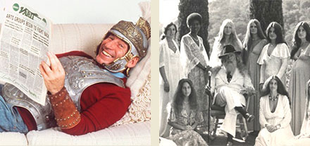

Mel Brooks talks to us about fighting in World War II (where he managed to even make a few Germans laugh), the genius of Gene Wilder, and that time Sid Caesar dangled Brooks out the window of a Chicago hotel room.
The Source Family fit the conventional image of a typical hippie cult in a lot of ways – assuming, of course, that there is such a thing as a typical hippie cult. Dig deeper, though, and it becomes clear that there was plenty that separated the Source Family from stereotypes.
You are listening to Bullseye. If you're interested in carrying Bullseye on your public radio station, contact Sean Aucoin at (703) 777-1949 or by email at sean@maximumfun.org